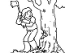

77
Il s'agit d'un camp de bucherons. Je vois plusieurs cabanes en bois rond dans une clairière ainsi que de nombreux bucherons attroupés autour d'un feu en train de terminer un repas. L'un d'eux, un homme d'une taille assez impressionnante pige un pomme dans un sac et en prend une bonne croquée. Ensuite il se lève et s'approche de moi. « Bonjour étranger! Je me nomme Petit-Jean et vous avez l'air perdu! Peut-on vous aider? » « Bonjour Petit Jean. Je suis Sam le chevalier sans cheval et effectivement un peu d'aide serait appréciée. J'ai perdu mon cheval et tout mon équipement ainsi que la mémoire. » L'homme me sourit puis il regarde ses pieds. Il porte de très belles bottes en acier. Pas très habituel pour un bucheron! « Vous voyez ces bottes sir? Je les ai trouvé dans la forêt. Elles sont sans doute à vous! Mais je les aime bien! Si vous voulez les récupérer, vous allez devoir lutter avec moi! Si vous gagnez, je vous les redonne. Si vous perdez, je les garde!»
|